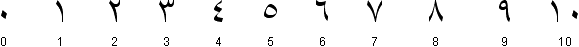
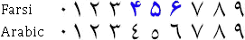

),
are not connected to the next letter in the word!
(You can play around with the
online Arabic keyboard
if you want to give it a try!)
),
are not connected to the next letter in the word!
(You can play around with the
online Arabic keyboard
if you want to give it a try!)
Now, we’ll discuss the Arabic script in detail, because it constitutes lots of specific challenges for OCR software. (Some of these elements we already discussed...)
The Arabic alphabet supports a limited set of 28 symbols. (Some additional letters are used to represent sounds which do not occur in Arabic — such as “p” or “g” — but in foreign words.)
Historically speaking, the Arabic script is an imitation
of handwriting. Most letters are
joined to the following letter of the
same word. Some combinations of letters form special
“ligatures”. Only a few
letters (“disjoined letters”), for instance
alif
()
and the phonetic symbol
hamza
(),
are not connected to the next letter in the word!
(You can play around with the
online Arabic keyboard
if you want to give it a try!)
All the letters are lowercase. there are no uppercase letters in arabic!
Short vowels are (normally) not written — the Quran and language-learning books for children are an exception — but long vowels are.
The shape of a letter depends on its position in the word. Each letter has 4 shapes: one shape is used in the beginning of the word, a second shape is used when the character occurs in the middle of the word, and a third shape is used in final position. The fourth shape is used to write the isolated character.
Some characters can vary significantly, depending on their position inside a word. The “ha” letter has two alternatives for the medial position: that symbol can be written in 5 different ways, no less!
Some letter shapes include dots; the position of the dot changes the meaning of the letter! These symbols are called “toothed” characters because the basic form — the red shape without the dots — looks like a tooth!
Double-sounding letters are written single; the “shadda” diacritic can be added above the letter to mark it as doubled.

The numerals from the Latin alphabet — ironically called “Arabic numerals” — are used alongside the numerals from the Arabic alphabet — these are called “Indian numerals”!

(Farsi (a.k.a. Persian), another language that uses the Arabic script, uses different symbols to represent the Indian numbers 4, 5 and 6.)


Arabic uses two widely different font types. “Naskh” is the round, calligraphic script you find in books, newspapers etc. and on computers. “Kofi” (also called “Koufi” or “Kufic”) is easy to recognize, this script looks very “square”, not rounded!
Arabic text is written on (base) lines, as is the Latin alphabet. Shallow letters rest on the line of writing. Tall letters do the exact same thing but are tall like a European “l”. Deep shapes start above the line of writing, swoop below it and then swoop up again.
To justify printed text placed in columns etc., the shape of some letters can be elongated (“Kashida” or “tatweel” words). It goes without saying that things are done very differently in the Latin script…

Arabic is written from right to left, just like Hebrew. However, both the Indian and Arabic numerals are written from left to right, and so are embedded phrases in Latin script!
 (… $362.250)
(… $362.250)
 (… 1559 …)
(… 1559 …)

As complicated as OCR of the Arabic language may be, there’s certainly reason to develop such software. Arabic speakers are estimated at 280 million. Arabic is the official language of 27 countries, no less. (Spoken Arabic varies per region, but written Arabic (“Modern Standard Arabic”) is the same throughout the Arabic world.)
(If you want a full list, here it is (in alphabetic order): Algeria, Bahrain, Chad, Comoros, Djibouti, Egypt, Eritrea, the Gaza Strip (governed by the Palestinian Authority), Iraq, Jordan, Kuwait, Lebanon, Libya, Mauritania, Morocco, Oman, Qatar, Saudi Arabia, Somalia, Sudan, Syria, Tunisia, United Arabic Emirates (U.A.E.) (includes Dubai) and Yemen. And until July 2018, Arabic was an official language in Israel — 1 million Palestinians live there!)
And then there’s Farsi. This Indo-European language written in Arabic script is used in Iran. (Farsi is often called “Persian”.)
Farsi uses 32 characters (unlike Arabic which has a symbol set composed of 28 characters). Four symbols are unique for Farsi.
This we already know: Farsi uses different symbols to represent the Indian numbers 4, 5 and 6.
Farsi does not use elongated letters (“tatweel” or “Kashida” words); extra spaces are added between the words to align the text in columnized newspapers, magazines etc.
Which languages can OCR software read? — The history of the alphabets – Latin alphabet — Latin punctuation — Greek alphabet — Cyrillic (Russian) alphabet — Hebrew alphabet — Arabic alphabet — Let’s go East – Chinese alphabet — Japanese alphabet — Korean alphabet — Asian punctuation
Home page — Intro — Scanners — Images — History — OCR — Languages — Accuracy — Output — BCR — Pen scanners — Sitemap — Search — Contact – Feedback